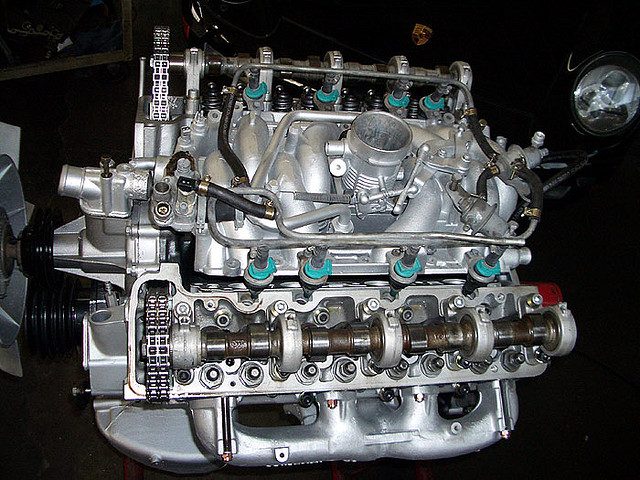
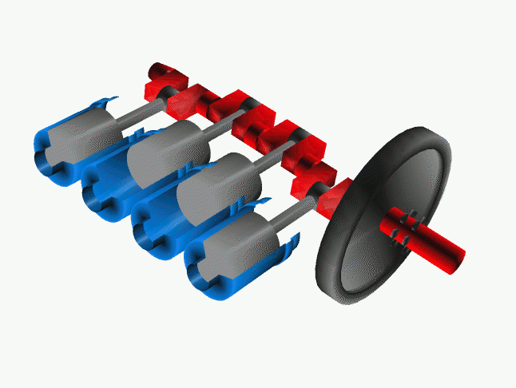

Database-free
Application

By Ido Kanner
* F(P)un intendedAbout Me
My name is Ido, I'm an IT developer (aka devops), and a business owner of LINESIP
Design a dumb system
for a smart world
I know, it's not Homer Simpson ...
Database free application ?!
The clouds are not the limit
$ # This can work almost everywhere ...Your idea sounds familiar.
Why ?
The actor actress model
What is actor model ?
The Actor model in computer science is a mathematical model of concurrent computation that treats "actors" as the universal primitives of concurrent digital computation: in response to a message that it receives, an actor can make local decisions, create more actors, send more messages, and determine how to respond to the next message received. The Actor model originated in 1973.[1] It has been used both as a framework for a theoretical understanding of computation, and as the theoretical basis for several practical implementations of concurrent systems.[2] The relationship of the model to other work is discussed in Indeterminacy in concurrent computation and Actor model and process calculi.
Oh, you actually wanted us to read that ???
Dude, what's wrong with you ?!
What is actor model ?
- One process to do, means one task to do.
- Each task is executed by different type of task.
- Each task knows only specific things.
- When a task doesn't know what to do, it's raise, return or delegate it to some other task.
It's not for me, it's for Poptziz
To sum it all up
Database free application is actually:
- A way to break down logic.
- One task = One process.
- The task receives data.
- It does only something that it knows how to.
- It reports a success and/or failure instead of dealing with the result.
- We call it Actor Model, but any other pet name is fine just as well.
Please give us an example

You like cars ?
Good, because that's my example
No, seriously
All in a car's Life*
- A car contain many separated systems:
Engine and wheel (for example). - Engine and wheels does different tasks.
- The engine knows nothing about the wheels.
- The wheels can be moved (in theory) without an engine.
- The engine can work without the wheels.
- And you can break them into more examples as with objects.
* The real song that Genesis needed to write ...
Engine
Crankshaft
Wheel
But where is the data ?
I hope you already know the answer ...
It's all depends on what you require to do with it !
May the source be with you
Questions (if there is time) ?